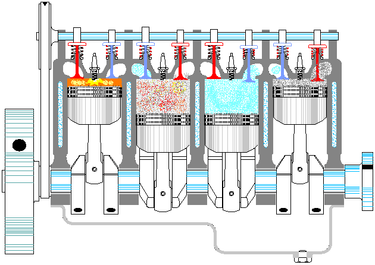

La rectificacion del cigueñal representa una parte fundamental en lo que significa la presion del motor
El motor, con el paso del tiempo (del uso), se va desgastando. Específicamente las zonas donde hay fricción, sumado a esto muy altas temperaturas. Vemos como funciona un motor de 4 cilindros: ver mas...
Siempre me han preguntado. '¿Cúal es mi carro favorito?;' y siempre he dicho 'El próximo.'
Para 1967, el G.T. 350 cargó el K-Code de 289 plg³ (4,7 litros) de alto rendimiento 'COBRA' con aluminio hilvanado. El G.T. 500 fue agregado a la alineación, equipado con un motor V8 "Ford Cobra Serie FE" de 428 plg³ (7 litros), con dos carburadores de cuatro gargantas Holley de 600 pies cúbicos por minuto (17,0 m³/min), sentado sobre un colector de admisión de aluminio de media altura.
ver mas...Con mas de 20 años de experiencia en el rubro brindando soluciones a la localidad y la zona de la Costa altantica. Particulares, talleres y empresas confíaron en nosotros y aún lo siguen haciendo.